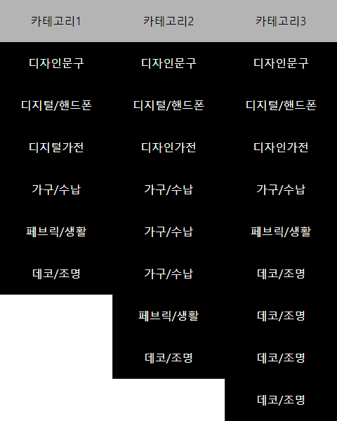

메뉴 기능 구현하기
#HTML, #CSS, #Java Script
2024. 05. 29. (Wed)
1. 구성 및 디자인
· HTML 언어와 CSS 언어로 기본 틀을 만들고, 스타일을 부여하여 디자인을 할 수 있다.
· 이 후 자바스크립트 언어를 활용하여 정적인 메뉴 요소를 동적으로 만들 수 있다.
예제)

See the Pen 메뉴 기능 구현 by 목성 (@qwmamjfw-the-solid) on CodePen.
1. 구성 및 디자인
· HTML 언어와 CSS 언어로 기본 틀을 만들고, 스타일을 부여하여 디자인을 할 수 있다.
· 이 후 자바스크립트 언어를 활용하여 정적인 메뉴 요소를 동적으로 만들 수 있다.
예제)
See the Pen 메뉴 기능 구현 by 목성 (@qwmamjfw-the-solid) on CodePen.